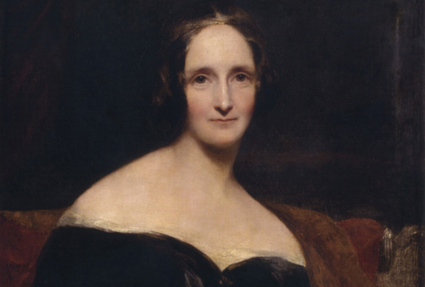

Mary Shelley: la creadora de Frankenstein

Mary Wollstonecraft Shelley | Autor: Richard Rothwell | Obra en domini públic
Mary Wollstonecraft Shelley (30 d'agost de 1797 — 1 de febrer de 1851), nascuda Mary Godwin, fou una escriptora anglesa sobretot coneguda per haver escrit Frankenstein, o el Prometeu modern (1818), una de les obres més representatives del romanticisme i que es considera un primerenc exemple de ciència-ficció.
La producció literària de Mary Shelley
Mary Shelley va ser una escriptora professional amb una obra extensa. En el següent llistat s'esmenten algunes d'aquestes obres agrupades per gèneres.
- Novel·les
- Frankenstein; Or, The Modern Prometheus (1818)
- The Last Man (1826)
- Lodore (1835)
- Narrativa de viatges
- Històries curtes
- The Evil Eye (1829)
- Transformation (1831)
Durant la seva vida Mary Shelley va ser ben considerada com a escriptora; però després de la seva mort va ser vista com la autora d'una única novel·la (Frankenstein o el Prometeu modern) en comptes de com l'escriptora que realment era. La majoria de les seves obres van estar fora de la circulació fins ben entrat el segle XX quan es van reeditar els seus escrits. Actualment es reconeix que Mary Shelley és una figura important del moviment romàntic i significativa pels seus assoliments literaris i per la seva veu política com a dona de la seva època..
Font: elaborat a partir de l'article de la Wikipedia Mary Shelley